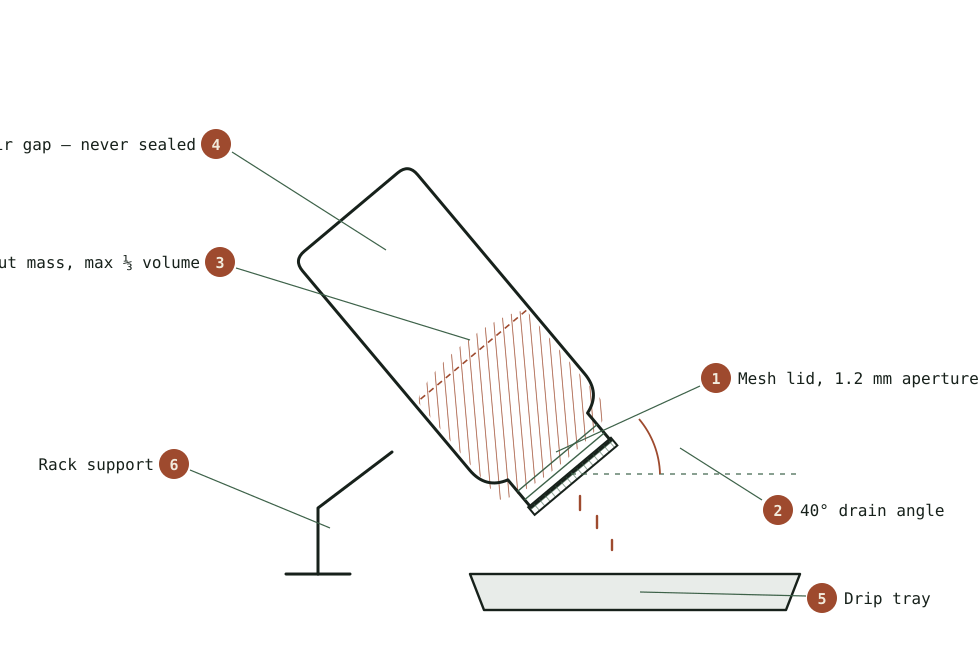

Guide
Mung Beans, Start to Finish
The complete four day cycle for mung bean sprouts, including the two mistakes that ruin most first batches.
As an Amazon Associate this site earns from qualifying purchases. Links to products may be affiliate links. This costs you nothing extra and does not change what gets recommended. Nothing here is medical advice.
Almost everyone who sprouts successfully started with mung, and almost everyone who gave up started with something else. The bean is not more nutritious than the alternatives and it is not more traditional in most kitchens. It is simply the most forgiving seed in the cupboard, and forgiveness is the only property that matters on a first attempt.
This guide runs one batch from dry seed to refrigerator, with the timings that actually matter and the two errors that account for most failures.

Why mung is the right first seed
Four properties make mung beans hard to fail with.
The seed is large. You can see individual beans, count them, and spot a dud. Fine seeds like alfalfa and broccoli behave as a mass rather than as individuals, which means a problem is invisible until it has spread through the whole jar.
The cycle is short. Three to five days from soak to harvest, so a mistake costs you the better part of a week and about forty cents of seed. Longer crops punish experimentation.
The bean tolerates a missed rinse. It has a thick hull, it holds less surface water than a fine seed, and it does not clump. Skip an evening rinse with mung and you will probably still eat the batch. Skip one with broccoli in July and you will not.
The result looks correct. A finished mung sprout is the crisp white thing sold in supermarkets, which sounds trivial and is not. Recognition is what turns one successful batch into a weekly habit.
Buying the seed
Buy mung beans sold for sprouting rather than grocery aisle beans intended for cooking. The distinction is about how the lot was handled and tested, not about the variety, and it is the single most useful safety decision available to you. The hub page covers why contamination is a seed problem rather than a kitchen problem.
Look for whole, unsplit, uniformly coloured beans. Split beans will not sprout, and a bag with many splits will leave dead matter sitting in a warm wet jar for four days. A small amount of variation in size is normal and harmless.
Buy a quantity you will finish within a year. Bulk pricing is tempting and mung holds its viability better than fine seeds, but a bag that outlives its germination rate becomes a hygiene problem rather than a bargain.
The soak
Measure three tablespoons of dry beans for a one litre jar. That will feel absurdly little. It will fill roughly a third of the jar when finished, which is exactly right, and the most common beginner error by a wide margin is starting with four times too much.
Rinse the dry beans first, twice, until the water runs clear. Then cover them with cool water to at least three times their depth, because they will swell considerably and any bean left above the waterline will not germinate evenly.
Soak for eight to twelve hours at room temperature. Overnight is the obvious slot. Longer than twelve hours in a warm kitchen starts to work against you, since the bean has finished absorbing what it needs and the water is now just a warm nutrient bath.
Drain the soak water completely and discard it. There is no benefit in keeping it and several reasons not to.
Days one to four
From here the job is repetitive and takes under two minutes each time.
Day one. Rinse thoroughly with cool water, swirl, and drain hard. Set the jar mouth down at a steep angle in a rack or bowl so residual water leaves rather than pools. Repeat morning and evening. By the end of day one the beans have split and a white root tip is showing on most of them.
Day two. Same rinse schedule. The roots lengthen to roughly the size of the bean itself. The mass begins to feel warm in the centre, which is normal and is also the reason the rinse matters. Germinating seed generates heat, and the rinse is carrying it away as much as it is cleaning.
Day three. Roots reach one to two centimetres. Many people harvest here, and short sprouts are sweeter and crisper. The mass has now expanded to fill most of the jar, and if it is packed tight you started with too much seed.
Day four. Roots reach three to five centimetres and the flavour turns slightly greener. Some hulls have loosened and float free during rinsing. This is the classic stir fry length. Past this point the sprout starts spending its reserves on becoming a plant, and the texture softens.
Rinse three times daily rather than twice if your kitchen is above about twenty four degrees Celsius. Heat accelerates everything, including the things you do not want.
Dehulling, which is optional
Green hulls float loose during the last day or two. They are entirely edible and slightly bitter, and commercial sprouts have them removed for appearance rather than for safety.
To remove them, tip the finished batch into a large bowl of cold water and agitate gently with your hand. Most hulls rise. Skim them off, let the water settle, and repeat once. Perfectionism here is wasted effort, since a few hulls in a stir fry are invisible.
Dehulling also has a practical benefit beyond appearance. Loose hulls hold moisture, and a batch stored with a lot of hull fragments spoils faster than one without.
Drying and storage
This step decides whether your sprouts last five days or two, and it is the step most guides skip entirely.
After the final rinse, drain hard, then dry the sprouts properly before they go anywhere near a container. Spread them on a clean towel for twenty to thirty minutes, or run them in a salad spinner in short bursts. They should feel dry to the touch, not merely drained.
Store in a container that breathes. A jar with a loose lid works. A lidded box with a folded paper towel in the base works better. A fully airtight container traps the moisture the sprouts keep releasing and undoes the drying you just did.
Expect five to seven days in the refrigerator. That window is one of the genuine advantages of growing your own, since a supermarket package has usually spent several days in transit before it reaches you.
Using them
Mung sprouts are structural rather than flavourful. They bring crunch and bulk and a faint sweetness, which means they work best where texture is the point and worst where they have to carry a dish on their own.
Raw, they belong in anything that wants crunch without water: banh mi, rice paper rolls, a grain bowl, the top of a noodle salad. Add them at the last moment. Sprouts dressed early go limp within minutes, because salt draws water straight out of them.
Cooked, they want heat and speed. A stir fry at high temperature for under a minute keeps the snap. Anything longer and they collapse into something closer to cooked cabbage, which is edible and is not what you grew them for. Add them last, after the protein and the aromatics, and take the pan off the heat while they still squeak against the spoon.
Soups are the exception to the speed rule and the best use for a batch that has gone slightly soft. Stir them into hot broth off the heat and they hold up well enough. Pho has always handled them exactly this way.
There is a practical reason to favour the cooked uses beyond taste. Heat is the only reliable pathogen kill step available in a home kitchen, and the hub page covers why that matters more for sprouts than for most raw foods. A minute in a hot pan costs very little texture and resolves the question entirely, which is the right trade for anyone cooking for someone pregnant, elderly, very young, or immunocompromised.
Portion realistically. A full jar produces four to six cups, which sounds like a great deal and disappears across three or four meals. If you are consistently throwing away the last cup, run less seed rather than eating more sprouts out of obligation.
RUN THE NUMBERS
Illustrative figures based on typical retail ranges. Not your local prices, and not a promise about your results.
| Input | Per batch |
|---|---|
| Dry seed | About 3 tablespoons |
| Water, soak and rinses | Roughly 4 to 6 litres |
| Active labour | Under 5 minutes daily |
| Elapsed time | 3 to 5 days |
| Finished yield | Roughly 4 to 6 cups |
| Refrigerated life | 5 to 7 days after proper drying |
A weekly habit turns the equipment cost into a rounding error within a couple of months. An occasional batch does not, and the seed goes stale in the meantime. Decide honestly which of those two you are.
WHAT GOES WRONG
Sour smell by day two. Drainage. The jar is sitting too flat and water is pooling at the base. Steepen the angle and check the rack. A healthy batch smells faintly sweet and green.
Dense slimy centre. Too much seed. The middle of the mass has no air. Halve the starting quantity next time and the problem vanishes.
Patchy germination with dead beans at the bottom. Old or split seed. Test twenty beans on a damp paper towel for seventy two hours before committing a full batch of anything older than a year.
Roots browning at the tips. Usually heat, sometimes hard water. Move the jar somewhere cooler and add the third daily rinse.
Sprouts soft rather than crisp. Harvested late, or stored wet. Try day three instead of day four, and dry more thoroughly before refrigerating.
DO THIS NOW
- Measure exactly three tablespoons of sprouting grade mung beans. Not a handful, and not a quarter cup by eye.
- Set two alarms, morning and evening, and leave them running for the whole first batch.
- Rinse, drain hard, and set the jar mouth down at a steep angle tonight.
- Write the date and the seed lot number on a piece of tape on the jar.
Next
Once you have run two clean batches, the next decision is whether your constraint is volume, cost, or consistency. Jars, trays, and automatic sprouters covers which upgrade solves which problem, and why buying the wrong one is the usual outcome.
If you came to sprouting for a specific reason rather than for the practice of it, broccoli sprouts and what the research actually says is the honest version of the page that sold you on the idea.